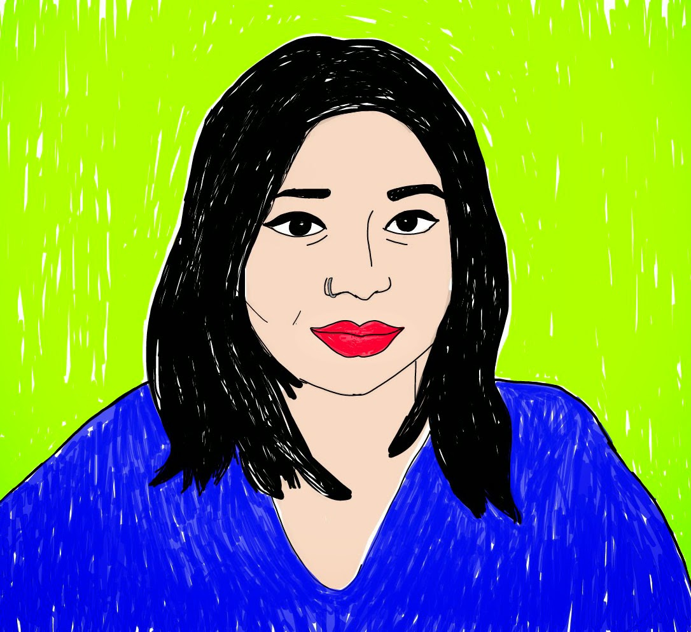

IL LATO GREEN NEL NUOVO MONDO
Hello! I'm Miriam Omar.
I am a multi-disciplinary artist, designer and entrepreneur based in Kuala Lumpur, Malaysia. I am also the founder of lifestyle label Project MIRRO and artist/ writer behind @mirronotes.
My artistic style is vibrant and colorful, often depicting themes of identity, culture, heritage, and nature in South East Asia. Through my use of texture and mark-making techniques, I aim to create depth and movement, inviting viewers to explore and immerse themselves in the intricacies of my artworks.
My creative expressions are inspired by my love for landscapes, people, textiles, and traditional motifs, which I seamlessly blend with contemporary elements. I am known for my bold and striking use of color, evoking emotions and setting the tone for my narratives. My art invites my audience to appreciate the beauty and complexity of my cultural heritage while offering a fresh perspective on the modern world.
If you are interested in owning a piece of my art, you can purchase my works through my brand, Project MIRRO. My artworks have been showcased in various exhibitions and collaborations both locally and internationally, and I am proud to represent Malaysian art and culture through my creations.